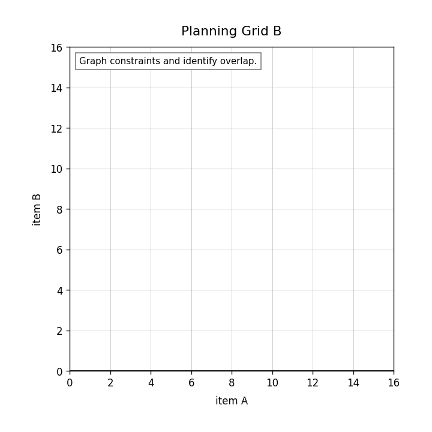
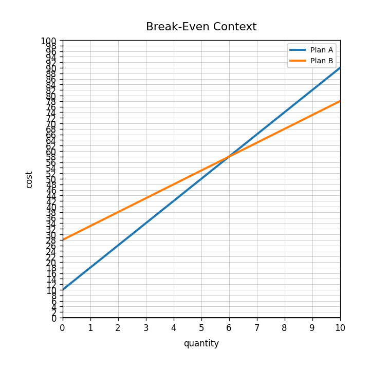

Practice Set 3.5.3
Full Rigor Spiral
Spiral Plan and DoK Balance
Current Focus
Unit 3.5: Linear Systems of Inequalities
DoK 1, DoK 2, DoK 3, DoK 4
Unit 3.5: Linear Systems of Inequalities
DoK 1, DoK 2, DoK 3, DoK 4
Main Spiral
Unit 2.5: Linear Modeling with Data
4 DoK 1, 2 DoK 2, 1 DoK 3, 1 DoK 4
Unit 2.5: Linear Modeling with Data
4 DoK 1, 2 DoK 2, 1 DoK 3, 1 DoK 4
Earlier Readiness
Unit 1.5: Equations as Models
DoK 1, DoK 2, DoK 3, DoK 4
Unit 1.5: Equations as Models
DoK 1, DoK 2, DoK 3, DoK 4
Practice Set 3: This is a section-aligned spiral: 3.5 with 2.5 and 1.5. It is not a previous-section spiral.
1.
In a system with $x+y\le 10$ and $y\ge 2$, which inequality gives the total limit?
2.
Graph the system: $$x+y\le 12$$ $$y\ge 4$$

3.
Use the snack graph. Compare points $A$, $B$, and $C$. Explain what you would check to decide feasibility.
4.
Create a realistic situation that needs two inequality constraints. Define variables and write both inequalities.
5.
Which representation is most useful for seeing association: table, scatterplot, equation, or verbal description?
6.
What does a residual describe?
7.
Is $y=2x+5$ a data model, an exact data set, or a graph?
8.
Name one reason a scatterplot might not be well modeled by a line.
9.
A model predicts 42, but the actual value is 39. Find the residual using actual minus predicted.
10.
Use $y=2.5x+11$ to predict the output when $x=10$.
11.
Explain how slope in a linear model helps you compare two situations.
12.
Given two possible linear models for the same data, describe evidence you would use to choose the better model.
13.
What variable could represent months in $C=15m+30$?
14.
Use the graph to compare the two plans at 6 units.

15.
Explain why solving an equation and reading a graph can answer the same modeling question.
16.
Create two different contexts that can both be modeled by $7x+10=52$. Solve and interpret each.